Your favourite sites, one click away.
Openmarks turns every new tab into a calm page of the sites you use most.
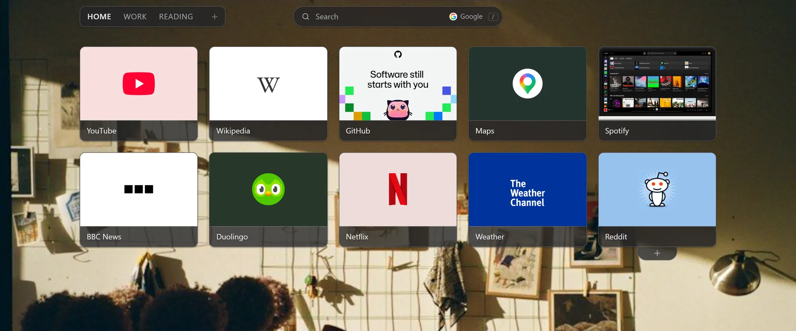
Ready in a minute
-
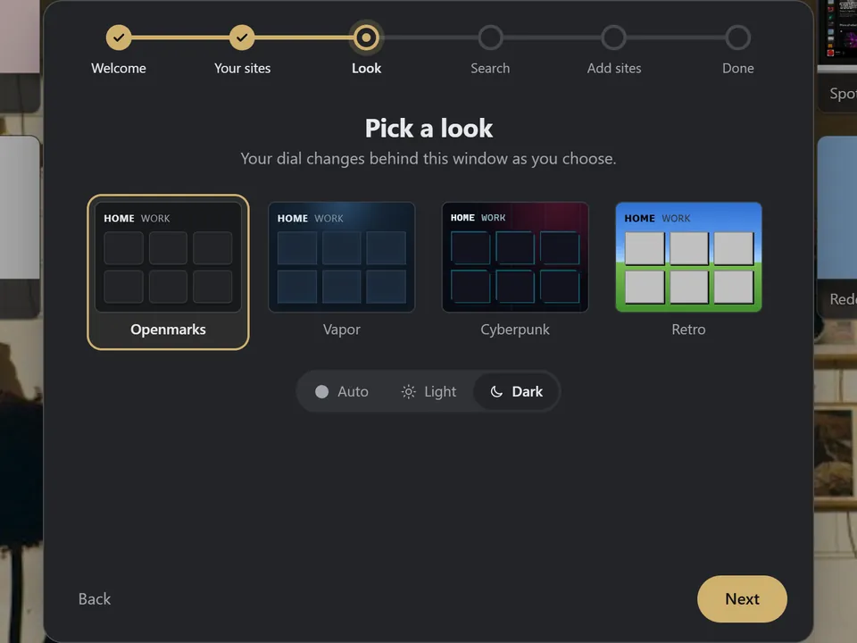
Add it to Firefox
A short welcome sets up your dial.
-
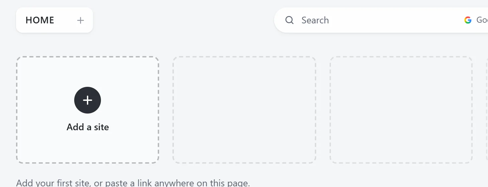
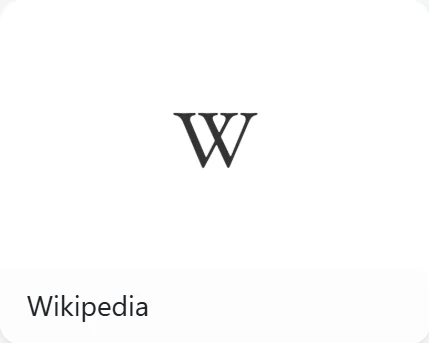
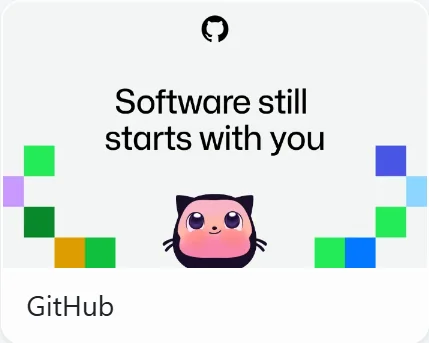
Add your sites
Click +, paste a link, or right-click any page.
-
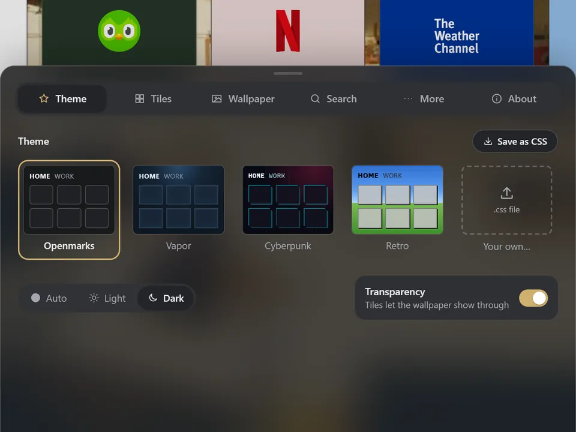
Make it yours
Pick a theme, a wallpaper and a search engine.
Pick a look
A new photo every day, or a theme that suits you.
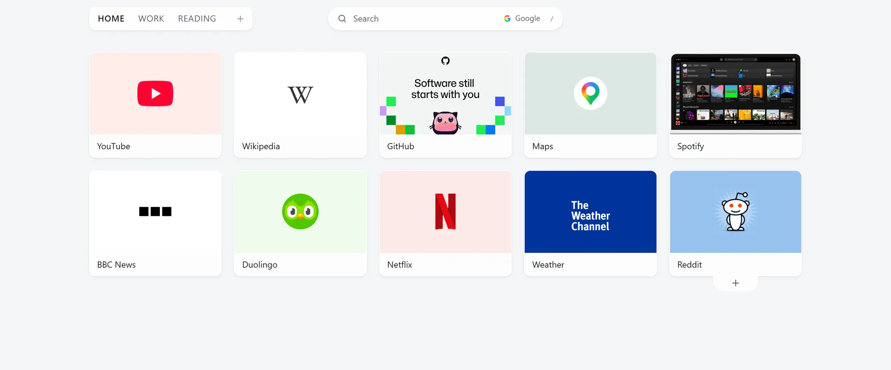
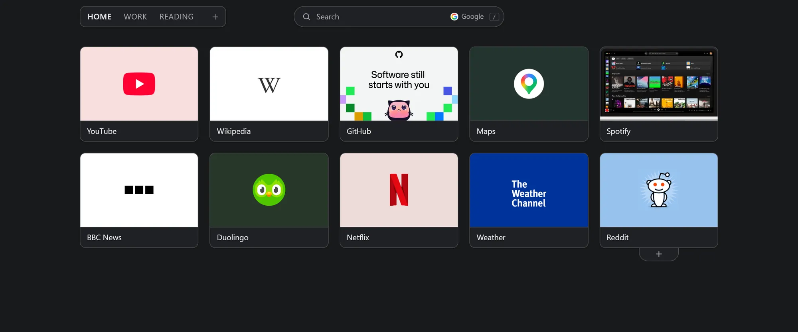
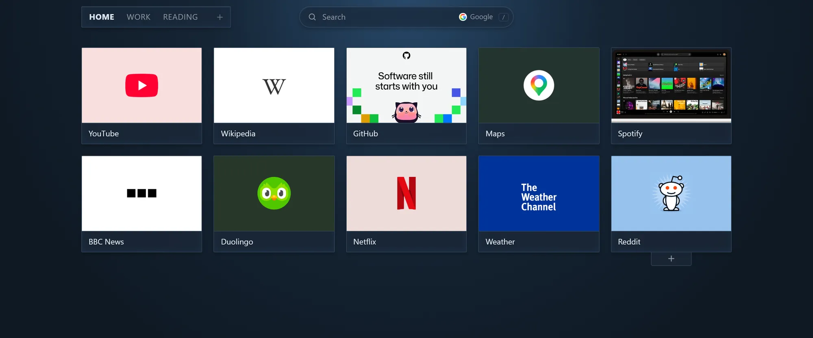
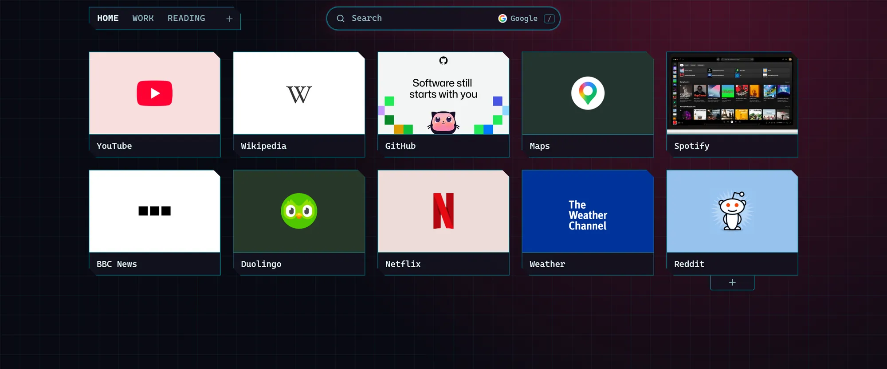
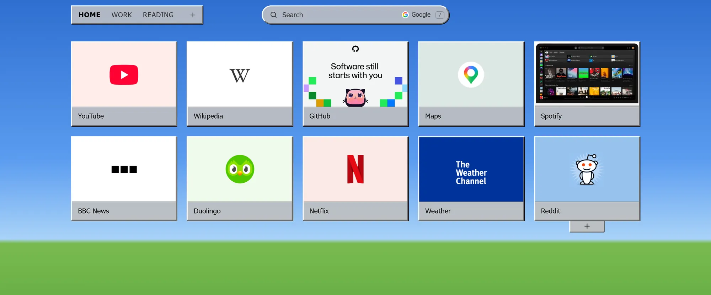
Yours, and only yours
- Your sites are ordinary bookmarks. Remove Openmarks and they stay.
- No account, no ads, no tracking. Privacy policy
- Free and open source. Read every line